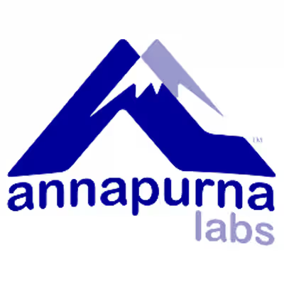

Hello, I'm
EECS @ UC Berkeley · ML & Computer Architecture
hey there!
Hello, I'm Annie Zhang. I am a third-year EECS (Electrical Engineering & Computer Sciences) student at UC Berkeley who is passionate about computer architecture and machine learning.
I also give back in the classroom — I TA Circuits & Digital Design and PCB Engineering. When I'm not buried in RTL or debugging ML kernels, I'm out exploring the world with my camera.

Machine Learning Engineer (Contract)
Undergraduate Researcher
Software Engineer Intern
Machine Learning Engineer (Contract)
Software Engineer Intern
Designed and verified a fully functional 3-stage pipelined RISC-V CPU with forwarding, UART tethering, and BIOS, achieving 50+ MHz clock frequency and CPI below 1.2. Integrated an IEEE 754-compliant FPU with CSR support.
View Project →Optimized a 2D convolution kernel using AVX2 SIMD intrinsics and OpenMP multithreading, achieving an 8.7× speedup through vectorized operations and thread-level parallelism, with loop restructuring for improved memory access patterns.
View Project →Built a scalable APM platform integrating Glowroot with AWS ECS and API Gateway for real-time JVM metric monitoring across 9.3M+ accounts. Features multi-threaded profiling, flame graph visualization, and automated incident alerting.
View Project →